ვსაუბრობთ აცრებზე
თავდაპირველად განვიხილოთ რა არის აცრა ?
აცრა არის ის , რაც ორგანიზმს აიძულებს გამოიმუშაოს ანტისხეულები დაავადებების წინააღმდეგ . მნიშვნელოვანია ძაღლი აცრილი იყოს ცოფზე და ჩატარებული ჰქონდეს კომპლექსური აცრები . შემდეგ კი რეკომენდირებულია ყოველ ერთ წელიწადში ერთხელ ერთი კომპლექსური აცრის ჩატარება . კომპლექსური აცრები ძაღლს იცავს:
- ჭირისგან
- ენტერიტისგან
- ადენოვირუსისგან
- და ა.შ
მაგრამ აღსანიშნავია ხარისხი , თუ რომელ აცრას გავუკეთებთ . მნიშვნელოვანია რომ აცრები ჩაუტარდეს ჯანმრთელ ძაღლს . ძაღლი თუ ავად არის ან აქვს რამე ვირუსი აცრა დაუშვებელია , რომ ორგანიზმი ზედმეტად არ დაიტვირთოს . ასევე თუ ძაღლს აქვს კვების პრობლემები და კუჭში ცუდად გადის გადადეთ აცრა .
აცრამდე ასავე აუცილებელია ლეკვის ჭიებზე ორჯერადად დამუშავება . ჭიის წამალი პირველად ლეკვს ეძლევა 25 დღის ასაკში .
ყველაზე ადრე ვაქცინაცია 6 კვირიდან იწყება . მაგრამ გააჩნია რომელი ვაქცინით ავიცრებით . ამ მიზეზის გამო ვაქცინებს შორის ინტერვალიც განსხვავდება . ზოგ ვაქცინას 2 კვირა აქვს ინტერვალი. ევროპულ ვაქცინას 3-4 კვირა აქვს ინტერვალი . ვაქცინაცია უნდა ჩატარდეს 3 ჯერ თუ აცრა იწყება 1,5 თვიდან . თუ აცრა იწვება 2 თვის ასაკში და ვცრით ამერიკული ვაქცინით მაშინ ორჯერადი ვაქცინაციაც საკმარისია.
ვაქცინა იცავს ძაღლს , მაგრამ არ გვაძლევს 100% გარანტიას რომ ძაღლს მოცემული დაავადება არ შეხვდება .
გახსოვდეთ რომ საქართველოში დაავადებები ძალიან არის გავცელებული და მუდმივად ვებრძვით დაავადებებს . ამიტომ აირჩიეთ ცნობილი ბრენდის სანდო ვაქცინაცია . ისინი კი უფრო ძვირი ღირს მაგრამ ვიტყოდი, რომ ეკონომია ვაქცინაზე არ ღირს.
ვსაუბრობთ ძაღლის ვარჯიშზე
კუნთოვანი მასის ასაშენებლად და გასაძლიერებლად საჭირო ფიზიკური ვარჯიშების შესრულების გარდა , არსებობს კიდევ ორი მნიშვნელოვანი კომპონენტი პირველი ეს არის დასვენება და აღდგენა , მეორე ხარისხიანი კვება.
მნიშვნელოვანია, რომ არ გადააჭარბო ძაღლის ვარჯიში და ნელ-ნელა გაზარდო წინააღმდეგობა და აქტივობები ანუ ვარჯიშები . მიაქციე ინტერვალებს დიდი ყურადღება , დასვენების დრომ საშუალება უნდა მისცეს მას სრულად აღიდგინოს ენერგია ვარჯიშებს შორის.
დიეტას (სწორ კვებას ) ასევე დიდი მნიშვნელობა აქვს, განსაკუთრებით მაღალი ხარისხის ცილები უნდა მისცე ამ დროს და სწორი რაოდენობით ცხიმები . ცილა მნიშვნელოვანია კუნთების და სხვა ქსოვილების აღსადგენად . ასევე ის აშენებს კუნთებს . ის საჭიროა კანის ახალი უჯრედების ფორმირებისთვისაც და ჯანსაღი ბეწვისთვის . სწორად სწორი კვების შემდეგ და სწორი ვარჯიშის შემდეგ დაეტყობა ძაღლს ლამაზი სხეული.სწორი რაოდენობის ცილების მიღება მის იმუნიტეტსაც გაზრდის .
ცილები შედგება ამინომჟავებისგან ალბათ იცი . ძაღლის ორგანიზნი ნახევარს წარმოქმნის ნახევარი კი კვებისგან უნდა მიიღოს . ნებისმიერი აუცილებელი ამინომჟავის ნაკლებობამ შეიძლება გამოიწვიოს იმუნური სისტემის დასუსტება. ამან შეიძლება გამოიწვიოს ენერგიის ნაკლებობა, კანისა და ბეწვის ცუდი მდგომარეობა . ასევე ენერგიის და კუნთების სწორი აღდგენა ვერ შეძლოს .
იდეალურ შემთხვევაში, ბიოლოგიური ტიპის პროტეინები(ცილები) მიეცით ,მსგავსად შეიწოვება უფრო ადვილად ორგანიზმში . ალბათ იცი ბიოლოგიური ცილებია თევზი , ქათმის ხორცი , ბატკნის საქონლის და ა.შ.
ხშირად დანამატებს და ვიტამინებს აძლევენ ვარჯიშისას ძაღლს ცილების მარაგის შესავსებად . მაგრამ მე რეკომენდაციას არ ვუწევ ყველა დანამატს და ეგ ცალკე თემაა რატომაც არ ვუწევ რეკომენდაციას და რატომაა ზოგი ეგ ვიტამინი ძაღლისთვის საშიში (აქ მოვიაზრებ იმ ვიტამინებს აძლევს ზოგი რასაც ბოდიბილდერები იღებენ ) . თუ მისცემ მიეცი მხოლოდ ის რაც ძაღლისთვისაა განკუთვნილი .
საუკეთესო ვარჯიშები :
- ცურვა (10 წუთიანი ცურვა ერთი საათის სიარულის ტოლფასია.)
- სიარული ან სირბილი ქვიშაზე ან წყლის ნაპირზე. (10 წუთი საკმარისზე მეტია იმისათვის, რომ თქვენმა ძაღლმა კარგად ივარჯიშოს)
- სიმძიმის გაწევა (გააკეთებინეთ 30-დან 60 ნაბიჯი . დაასვენეთ 2 წუთი და გაიმეორეთ. თანდათან შეგიძლიათ გაზრდაც .)
- კიბეზე ასვლა
- ხტუნვა
- Spring pole
- Flirt pole
მოცემული ვარჯიშების ლიმიტი სწორად განსაზღვრეთ . დაუშვებელია ამ ვარჯიშების დიდხანს გაკეთება შეუსვენებლად . ყოველდღიურად მსგავსი ვარჯიშიც არ არის რეკომენდირებული მიეცით საშუალება ძაღლმა დაისვენოს და აღიდგინოს ერეგია .
თუ თქვენ მიყვებით რამდენიმე მარტივ ნაბიჯს თქვენ შეძლებთ თქვენ ლეკვს ასწავლოთ მოცემული ბრძანება მარტივად და სტრესის გარეშე . 🐶💖
უპირველეს ყოვლისა განვიხილოთ ლეკვის ფსიქოლოგია . ყველა ლეკვს აქვს ინსტიქტი , რომ საკუთარი სათამაშო ტერიტორია და საჭმელი შეინარჩუნოს სუფთად . ისინი არ ისაქმებენ იმ ტერიტორიაზე სადაც თვლიან, რომ იძინებენ და იკვებებიან .
იქიდან გამომდინარე რომ მათ აქვთ პატარა შარდის ბუშტი რეკომენდირებულია ყოველ 2-3 საათში მოხდეს იმ ადგილზე მისი გაყვანა , სადაც გსურთ რომ მოისაქმოს . (ღამითაც კი ) მოცემულ მომენტში საუბარია პატარა ასაკის ლეკვებზე . ზრდასთან ერთად საათების საოდენობაც იზრდება .
კარგი იქნება თუ შეჩვევის პირველ დღეებში თქვენ დააყენებთ ტაიმერს და ყოველ ერთ საათში გაიყვანთ მას იმ ტერიტორიაზე სადაც გსურთ , რომ მოისაქმოს . აღნიშნულ ადგილზე გადაყვანისას ნუ დაუწყებთ ლეკვს თამაშს , თორემ აერევა თამაშის და მოსაქმების ადგილი . ამ მომენტში მნიშვნელოვანია დააიგნოროთ (იტრიალეთ მოცემულ ტერიტორიაზე ) და დაელოდეთ სანამ არ მოისაქმებს . როდესაც მოისაქმებს შეაქეთ , ამის შემდეგ გადაინაცვლეთ ისევ სათამაშო ტერიტორიაზე და კვლავ დააყენეთ ტაიმერი . (თუ არ მოისაქმა ამ პერიოდში ეს პრობლემას არ წარმოადგენს . გაიმეორეთ იგივე კვლავ რამდენიმე ხანში ) .
საერთოდ , როდესაც ლეკვებს მოსაქმების მოთხოვნილების სურვილი უჩნდებათ და გვინდა ამას მივხვდეთ
მისი წინაპირობებია :
- მიწის ყნოსვა 🐾,
- ტერიტორიის გარშემო ტრიალი 🐾 ,
- ახლახანს თუ გაიღვიძა 🐾 ,
- ლეკვის ზონიდან თუ ახლახანს გამოუშვი 🐾,
- თუ ჭამა ან დალია 🐾 ,
- სათამაშოებთან თამაშობდა ადგა და სხვა საქმისკენ წავიდა 🐾,
- იყო აღელვებული 🐾 ,
- იყო ძალიან აქტიური 🐾.
თუ შეატყობთ ამ წინაპირობებს გადაიყვანეთ იმ ადგილზე სადაც გსურთ , რომ ისწავლოს მოსაქმება .
ასევე გახსოვდეთ შარდი ლეკვისთვის არის ნეონივით . ის ეუბნება "ეს ადგილი ტუალეტია" . ამიტომ თუ ის არასწორ ადგილზე მოისაქმებს უკლებლივ გაასუფთავეთ მშვიდად ტერიტორია.
შეცდომა, რასაც ხშირად უშვებენ პატრონები არის ის , რომ სჯიან ლეკვებს არასწორ ადგილზე მოსაქმებისთვის და შექმნილი აურზაურისთვის . სწავლების პროცესში გახსოვდეთ შეცდომა გარდაუვალია და არასდროს ეჩხუბოთ ან დასაჯოთ ლეკვი .
პირველი მიზეზი ის ვერ მიხვდება წარსულში ჩადენილ ქმედებაზე თუ ეჩხუბებით.
მეორე მიზეზი თუ დასჯით ,ის ამას მხოლოდ აღიქვამს , რომ თქვენს გარშემო არ უნდა მოისაქმოს . ამ დროს ხშირია რომ ლეკვები იპარებიან , რომ თავი დააღწიონ პატრონს და ჩუმათ მოისაქმონ .
მნიშვნელოვანია ძაღლს ჰქონდეს წვდომა მის მოსასაქმებელ ტერიტორიასთან .
ძაღლებს ჩვევები და განრიგი უყვართ , ამიტომ მის ცხოვრებაში სწორ განრიგს დიდი მნიშვნელობა მიანიჭეთ .
ამაში ვგულისხმობ კვების განრიგსაც . ნუ შეუცლით კვების განრიგს მუდმივად და ნურც შეუცვლით შეჩვეულ კვებას . თუ ეს აუცილებელი გახდა საჭმელი სწორად შეარჩიეთ , რადგან ისინი მგრძნობიარეები არიან გარკვეულ ინგრედიენტებთან . კვების განრიგის არევა გამოიწვევს მის მოსაქმების განრიგის არევას და ამისთვისაც მზად უნდა იყოთ .
გახსოვდეთ აპატიეთ შეცდომები და გამოიჩინეთ დიდი მოთმინება . ამ მომენტში ორივე საკუთარი თავის მაქსიმუმს აკეთებთ .
მოცემული მითი მოდის იმ ფაქტიდან , რომ ძვლის ხრტილი შეიცავს D ვიტამინს , რომელიც შეიძლება მოიაზრებოდეს მის დადებით თვისებად, მაგრამ ის საზიანოა ძაღლისთვის .
მოდით უფრო კონკრეტულად განვიხილოთ . დაღრნისას ძვლები იშლება და იბზარება . ამ ნატეხებს ძაღლი ყლაპავს და ძვლის ნაჭრები უზიანებს გარკვეულ ორგანოებს . ნატეხის მთლიანად გადაყლაპვის მცდელობისას ძვლები შეიძლება გაიჭედოს საყლაპავში , რამაც გამოიწვიოს თქვენი ძაღლის დაღლილობა ,ნერწყვდენა და უარეს შემთხვევაში დახრჩობა .
ძვლებმა შეიძლება გამოიწვიოს ასევე კუჭ-ნაწლავის ტრაქტის მოწყვეტის რისკი.
ქათმის ძვლები, განსაკუთრებით მოხარშვის დროს, ადვილად იშლება. ისინი შეიძლება იყოს მკვეთრი ნატეხები და დააზიანოს თქვენი ძაღლის საყლაპავის ან ნაწლავის პერფორაცია. ამან კი შეიძლება გამოიწვიოს ინფექციები და ანთებები, რაც საჭიროებს სასწრაფო სამედიცინო დახმარებას.
თუ ქათმის ძვალი უმია, შეიძლება მასზე იყოს ბაქტერიები, როგორიცაა სალმონელა.
მესმის ბევრი პატრონი მკაცრად აღნიშავს, რომ წლებია აჭმევს ძვლებს მის ძაღლს და არაფერი მოსვლია , მაგრამ ყოველთვის ვერ გაგიმართლებთ ეგეც უნდა გესმოდეთ .
ბოლო კვლევებმა აჩვენა, რომ შინაური ბინადრის საკვები რაციონიდან სასურველია, სრულიად ამოიღოთ ძვლებიც, რადგან მისი ნაწილების გადაყლაპვის შედეგად, არაერთი შემთხვევა ფატალურად დასრულებულა .
მნიშვნელოვანია თქვენს ოთხფეხა მეგობრებს შესთავაზოთ სწორი დაბალანსებული დიეტა . ❗🙏
⭕ გახსოვდეთ, რომ არასწორი წონა განპირობებულია მიღებული და დახარჯული კალორიების პროპორციულიბის დარღვევით.
თუ მიღებული კალორიები მეტია ვიდრე დახარჯული, მაშინ ნებისმიერი ცოცხალი არსება იქნება მასის დაგროვების პროცესში . თუ მიღებული კალორიები ნაკლებია ვიდრე დახარჯული , მაშინ ნებისმიერი ცოცხალი არსება იქნება მასის კლების პროცესში.
📌 გთავაზობთ ილუსტრირებული წონის გაიდლაინს უკეთესი აღქმისთვის, რომ იცოდეთ რომელია იდიალური წონა და რას ვერ ამჩნევთ მეპატრონეები ჩაპუტკუნებული ან ვითომ ნავარჯიშები ცხოველის მიღმა.
არასწორი წონა უამრავ პრობლემას უქმნის მათ. ✌️
წონის გაიდლაინი

🔺 შემოხტომა ჩვეულებრივი და ბუნებრივი ქცევაა ძაღლებში. ლეკვები ახტებიან მშობლებს , რადგან მიესალმონ. . ძაღლებს ასევე ახასიათებთ შემოხტომა , როცა აღელვებულები არიან ან ნივთის მოპოვება სურთ ,რაც ხელში გიჭირავთ.
🔺 მაგრამ ხშირად შემოხტომა იწვევს დისკომფორტს პატრონებში და საფრთხესაც ქმნის , როდესაც ჩვენი პიტბულები ძლიერად გვახტებიან .
🔺 ძაღლის შემოხტომის შესაჩერებლად მრავალი მეთოდი არსებობს, მაგრამ ყველა არ არის წარმატებული გზა .
მაგალითად : მუხლის აწევა, თათების დაჭერა და ხელის მოჭერა . ეს გზები შეიძლება ზოგიერთ შემთხვევაში მართლაც ეფექტური იყოს, მაგრამ ძაღლების უმეტესობა ამას არასწორ შეტყობინებად აღიქვამს.
🔺ამის მიზეზი არის ის , რომ შემოხტომა ხშირად ყურადღების მიქცევის მიზეზია , ამიტომ თუ თქვენი ძაღლის ამ ქმედებას ნებისმიერი გზით აღიარებთ თუნდაც მუხლის აწევით, ის მიიღებს მას როგორც ჯილდოს და ხტუნვას გააგრძელებს.
🔺საუკეთესო მეთოდი უბრალოდ დაიგნორებაა. საჭიროების შემთხვევაში უნდა გაშორდეთ მას . არ უნდა დაამყაროთ თვალით კონტაქტი, არ ესაუბროთ ან არ შეეხოთ თქვენს ძაღლს. მიხედეთ თქვენს საქმეებს, როდესაც ის მოდუნდება და დამშვიდდება მშვიდად დააჯილდოვეთ იგი.
🔺 დიდი დრო არ დასჭირდება მას სწორი ქმედების მისახვედრად.
გისურვებთ წარმატებებს . 💖🥰
ზოგადად, მდედრი ძაღლები სქესობრივ მომწიფებას ან სქესობრივ სიმწიფეს აღწევს ექვსი თვის ასაკში. თუმცა, ეს შეიძლება ძალიან განსხვავდებოდეს, ჯიშისა და ძაღლის მიხედვით.
დიდი ჯიშის ძაღლებს სქესობრივი სიმწიფის მიღწევამდე შეიძლება ორი წელი დასჭირდეს.
თუმცა, მნიშვნელოვანია განვასხვავოთ სქესობრივი სიმწიფე ფიზიკური სიმწიფისგან.
ძაღლებში სქესობრივი სიმწიფე ფიზიკურ სიმწიფეზე ადრე მოდის და არ უნდა მივიჩნიოთ იმის ნიშნად, რომ ძაღლი მზადაა გამრავლებისთვის. მაგალითად ძაღლების უმეტესობა "მზადაა" 6-დან 12 თვემდე ლეკვების გაჩენისთვის . მაგრამ მისი შეჯვარება არასწორია მიეცით თქვენს ძაღლს "გაზრდის" საშუალება.
ციკლი ჩვეულებრივ წელიწადში ორჯერ ან ოთხჯერ აქვთ .
ნიშნები, რომლებიც ნათლად მიუთითებს ციკლის დასაწყისს არის: სისხლიანი გამონადენი, ვულვარის შეშუპება, მიდამოში ლოკვა, ასევე მამრი ძაღლების მიმართ ინტერესის გაზრდა.
ციკლი ჩვეულებრივ გრძელდება ორი ან სამი კვირა. ჩვეულებრივ, შეჯვარება რეკომენდებულია ციკლის მეთერთმეტე დღეს. ამ დროს თქვენი ძაღლი გამოიჩენს ინტერესს მამრის მიმართ .
მდედრი ძაღლი არ უნდა გამრავლდეს მანამ, სანამ მეორე ან მესამე ციკლი არ ექნება .ეს ჩვეულებრივ დაახლოებით 24 თვის ასაკია. ფიზიკური სიმწიფე დაახლოებით 24 თვეა , მაგრამ ეს შეიძლება განსხვავდებოდეს სხვადასხვა ძაღლებისთვის .( ინდივიდუალურია)
მაშასადამე , მდედრი ძაღლი გამრავლებამდე უნდა იყოს სრულად მომწიფებული, რადგან ადრეულმა გამრავლებამ შეიძლება გამოიწვიოს ფიზიკური პრობლემები, ქცევითი პრობლემები ან გაზრდილი რისკი ორსულობის დროს. კიდევ ერთი მიზეზი, თუ რატომ უნდა დაელოდოთ თქვენი ძაღლის სრულ მომწიფებას, არის ის, რომ იცოდეთ რა გენეტიკური მიდრეკილებები ან მემკვიდრეობითი დარღვევები აქვს. ჯანმრთელობის პოტენციური პრობლემის საერთო მაგალითია ბარძაყის დისპლაზია, რომელიც ზოგჯერ არ ვლინდება მანამ, სანამ ძაღლი მთლიანად არ მომწიფდება, რადგან ეს დაავადება შეიძლება გადაეცეს ძაღლის შთამომავლობას (დაავადება ხშირია დიდი ზომის ძაღლებში )
დართვამდე უმჯობესია თქვენი ძაღლის ფიზიკური გამოკვლევა, რენტგენი, პირის ღრუს დნმ-ის ნაცხი ან სისხლის ანალიზი. გარკვეული დაავადებების შესამოწმებლად. ეს გამოკვლევები ასევე შეიძლება მოიცავდეს სქესობრივი გზით გადამდები დაავადებების შემოწმებას, რომლებიც შეიძლება გადავიდეს შეჯვარების დროს.
მდედრობითი სქესის ძაღლების გამრავლება არ უნდა მოხდეს, როცა ისინი მოხუცები არიან, რადგან განრავლება და ორსულობის პროცესი შეიძლება ძალიან დამღლელი იყოს და ფიზიკურად დაზარალდნენ.
ჯანმრთელი მდედრი ძაღლების გამრავლება შესაძლებელია 8 წლის ასაკამდე . თუმცა, სხვა ფაქტორებმაც შეიძლება გავლენა იქონიოს რეკომენდებულ ასაკზე, რათა არ მოხდეს მისი შეჯვარება..ნებისმიერ შემთხვევაში, ყოველთვის უნდა მიმართოთ თქვენს ვეტერინარს, როდესაც ფიქრობთ 5 წელზე უფროსი ძაღლის დართვას , რადგან ამ ასაკის შემდეგ ორსულობის დროს ჯანმრთელობის გართულებების ალბათობა უფრო მაღალია.
თანმიმდევრული ორსულობა არ არის რეკომენდებული. მაშასადამე, ორსულობათა ყველაზე ოპტიმალური რაოდენობა , არის ორი ან სამი მდედრის სიცოცხლეში.
რაც შეეხება მამრ ძაღლებს, ისინი იწყებენ სპერმის გამომუშავებას, დაახლოებით 6 თვის ასაკში , მაგრამ ისინი სქესობრივად მომწიფებულნი არ არიან სადღაც 12-დან 15 თვემდე.
თითოეული მფლობელები პასუხისმგებლები უნდა იყოთ თქვენი ძაღლის ჯანმრთელობაზე და ბედნიერებაზე. დართვა ზედმეტად საპასუხისმგებლოა ამიტომ სჭირდება განათლება , სწორი და ჯანმრთელი შთამომავლობით წარმოებისთვის . ისწავლეთ!!
გაუფრთხილდით ლეკვების და ძაღლის ჯანმრთელობას .
პიროტექნიკა საფრთხეს უქმნის მოზარდებს , ზრდასრულებს , ჩვენი ოთხფეხა მეგობრების ფსიქიკას , სხვა ცხოველებს და გარემოს
უამრავი ცხოველი იკარგება ახალი წლის პერიოდში , იმდენად ეშინიათ და ცდილობენ დამალვას ზოგი გაუცნობიერებლად სახლიდან გარბის , რათა ამ ხმებს გაექცეს .
ალბათ შეგიმჩნევიათ კიდეც ახალი წლის დღეებში გახშირებული პოსტები დაკარგული ძაღლების თაობაზე .
ხშირია შემთხვევა , რომ მოცემული ხმები იწვევს შიშს ჩვენს პიტბულებში . ისინი ღიზიანდებიან , იბნევიან , ყეფენ , დაბნეულად დარბიან , ზოგს კი იმდენად ეშინია იმალება კანკალებს და განიცდის .
ამ დროს პატრონი ძალიან განიცდის უპირველესი რასაც აკეთებს მის შეშინებულ ან დაბნეულ ძაღლს ვითომ "ამშვიდებს ", ეფერება . განერვიულებულ ცხოველს , როდესაც ვეფერებით პირდაპირ ვეუბნებით , რომ ეს კარგია . ამ შფოთს კი არ ვუხსნით პირიქით უფრო დიდში გადავზრდით . ამ პერიოდში სჯობს საერთოდ დავაიგნოროთ მისი შიში . არ მოხდეს არც მისი შექება და არც შენიშვნის მიცემა . ვეცადოთ ჩვენც ვიყოთ მშვიდად და ეს მას დავანახოთ , რადგან უნდა მიხვდეს ის , რომ როდესაც პატრონი მშვიდად არის მასაც არ ემუქრება საფრთხე .
მეორე გზა არის , როდესაც მას შეეშინდება ვეცადოთ ეგრევე გადავატანინოთ ყურადღება საყვარელი სასუსნაო ან სათამაშო მივცეთ . ყველანაირად ვეცადოთ რომ პოზიტიური მიდგომით მოცემული სიტუაცია ასოცირდეს მათთვის რამე კარგთან .
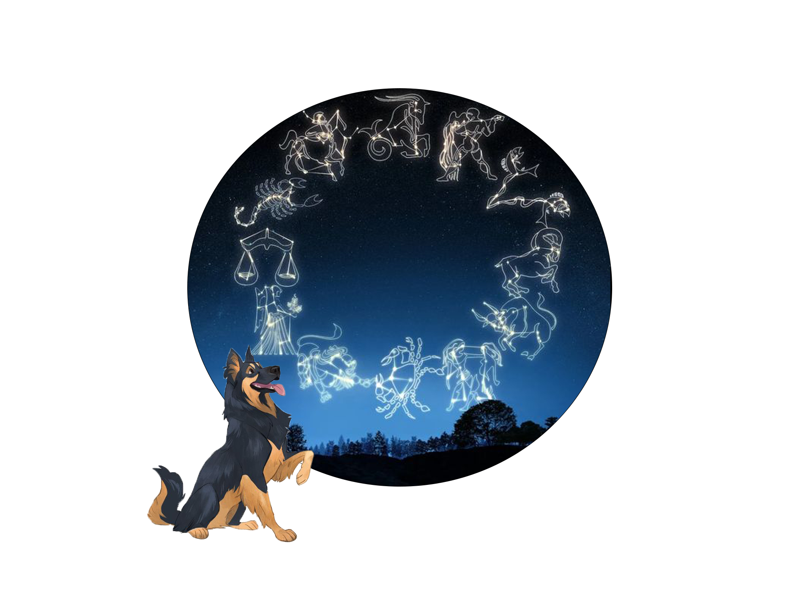
თქვენ ალბათ იცით საკუთარი ზოდიაქოს ნიშანი, მაგრამ იცით თუ არა თქვენი ძაღლის ზოდიაქოს ნიშანი?
მეტი ცოდნა თქვენი ძაღლის პიროვნების შესახებ დაგეხმარებათ უკეთ იზრუნოთ მათზე.
უძველესი დროიდან ადამიანები უყურებენ ცაში ვარსკვლავებსა და პლანეტებს, ცდილობდნენ გაერკვნენ მათი ადგილი კოსმოსში.
ინდივიდის დაბადების დროს პლანეტების პოზიციების შესწავლით, ასტროლოგებს შეუძლიათ გაიგონ ბევრი რამ ადამიანის ან შინაური ცხოველის შესახებ,
როგორიცაა მათი ხასიათი და პოტენციალი, ასევე მათი შეზღუდვები და როგორ გადაჭრან ისინი.
ასტროლოგიას ასევე შეუძლია გაგვაცნოს აქტუალური საკითხები, რამდენად თავსებადები ვართ ჩვენს ცხოვრებაში მნიშვნელოვან ადამიანებთან ან შინაურ ცხოველებთან.
წაიკითხეთ, რომ გაიგოთ ძაღლის ზოდიაქოს ნიშნები და რას ამბობს თქვენი ძაღლის ასტროლოგიის ნიშანი მათ შესახებ.
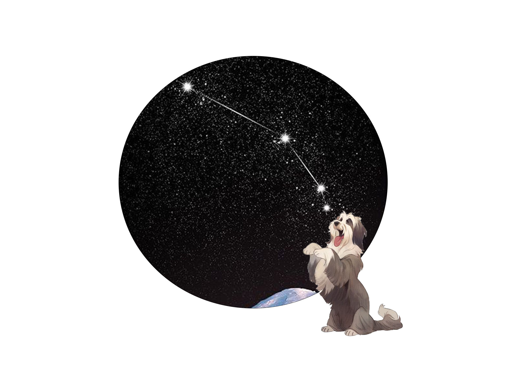
ვერძი (მარტი 21-აპრილი 19)
ვერძი ზოდიაქოს პირველი ნიშანია, ამიტომ გასაკვირი არ არის, რომ ეს შინაური ცხოველები ლიდერებად იბადებიან. მათ უყვართ მოქმედება და მღელვარება.
ისინი ამბიციურები და გაბედულები არიან. მათ სურთ რომ იყვნენ ბოსები და იყვნენ პირველები. მარსით მართული ძაღლები დამოუკიდებელნი და მოძრავნი არიან.
მათ შეუძლება დაჟინებით მოგთხოვონ გასეირნება .
მათ აქვთ საკუთარი გონება და სულაც არ მოდიან დაძახებისას , თუ მას არ სურს. დადებითი მხარე ისაა, რომ მათ აქვთ დიდი გული და მოსიყვარულე სული, რომელიც დაუძლეველი და გადამდებია.
ყველაზე თავსებადი ზოდიაქოს ნიშნები
მშვილდოსანი, ლომი და ტყუპები
ყველაზე ნაკლებად თავსებადი ზოდიაქოს ნიშნები
თევზები, კირჩხიბი და სასწორი
ძლიერი მხარეები
ტონა ენერგია. უყვარს ვარჯიში და გარეთ ყოფნა. მხიარული ძაღლია.
სისუსტეები
კონკურენტუნარიანია სხვა ძაღლებთან. დომინანტობის სურვილი.
ელემენტი
მმართველი
ცეცხლი
მარსი
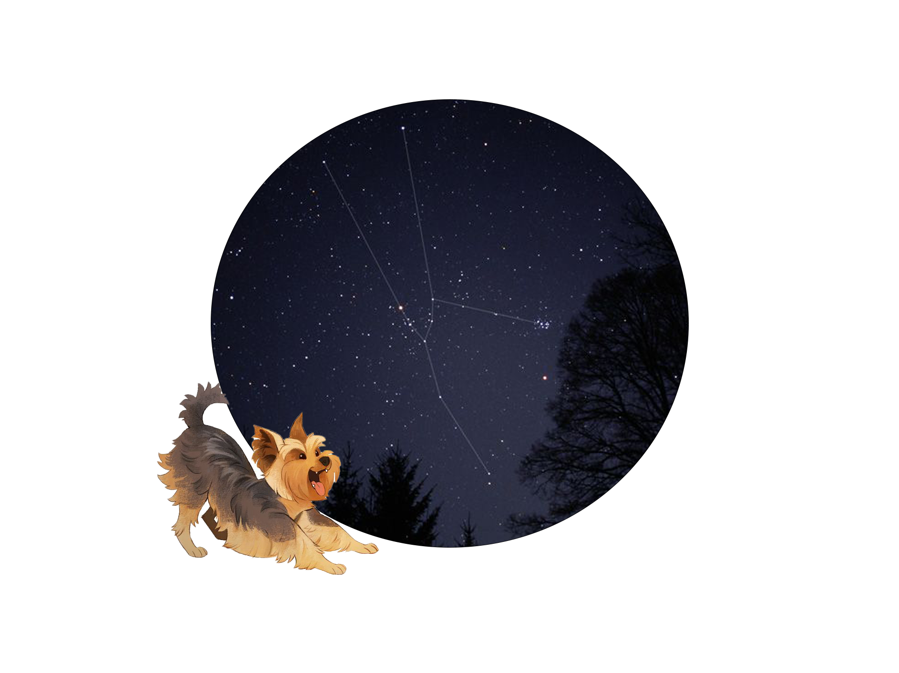
კურო (აპრილი 20-მაისი 20)
კურო შეგიძლიათ ერთი სიტყვით შეაჯამოთ: მყუდრო! გაზაფხულზე დაბადებულები, როცა მიწა აყვავებულია და მზე ათბობს. ისინი
მიწიერები და ბუნებრივები არიან. ისინი ასევე პრაქტიკულები, სანდო და შრომისმოყვარეები არიან ბუნებისა და სილამაზის ღრმა სიყვარულით. კურო ძაღლების შეუძლიათ იყვნენ
ჯიუტები და სძულდეს ცვლილება. არ გადააადგილოთ მათი წყალი ან საკვების თასი. მათ ასევე არ უყვართ ვარჯიში, მაგრამ სჭირდებათ; დარწმუნდით,
რომ მათ აქვთ რეგულარული რუტინა.
ისინი გიჟდებიან კომფორტზე, უნდა იყოს მშვიდი და უსაფრთხო. მათ აქვთ მოსიყვარულე განწყობა და უაღრესად ერთგულები არიან.
ყველაზე თავსებადი ზოდიაქოს ნიშნები
კირჩხიბი, თხის რქა და თევზები
ყველაზე ნაკლებად თავსებადი ზოდიაქოს ნიშნები
ვერძი, ლომი და მერწყული
ძლიერი მხარეები
მოსიყვარულე. სანდო. უყვარს ჩახუტება.
სისუსტეები
შეიძლება იყოს ზარმაცი. საჭმელისთვის ცხოვრობს.
ელემენტი
მმართველი
მიწა
ვენერა
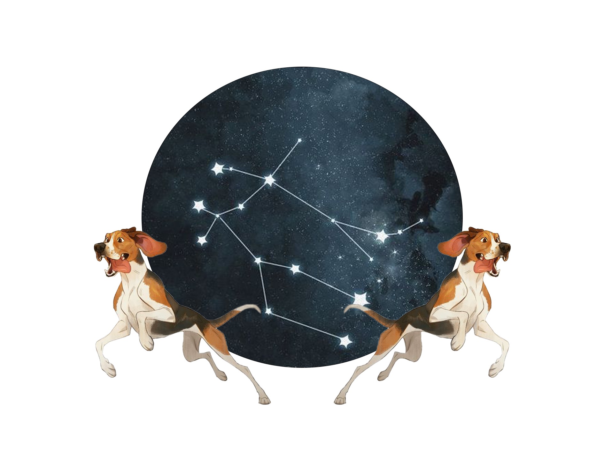
ტყუპები(მაისი 21-ივნისი 20)
გონებრივი მერკური მართავს, ტყუპების ნიშანი ასოცირდება კომუნიკაციასთან, ინფორმაციასთან, ლაპარაკთან და მედიასთან. ამ ნიშნის ძაღლები ჩვეულებრივ ვოკალურები არიან.
ისინი მუდამ დაკავებულები და მოძრაობაში არიან, ამიტომ ბევრი რამ აქვთ სათქმელი. ტყუპების ძაღლების მსგავსად, მათი ადამიანური კოლეგები არიან სუპერ ჭკვიანები და ძალიან
ცნობისმოყვარეები, რამაც შეიძლება გამოიწვიოს გართობაც და ბოროტებაც. მათი
პიროვნება შეიძლება შეიცვალოს სიმშვიდიდან სიგიჟემდე. მათ გააჩნიათ კომიკური თვისებები, რომელიც მომხიბვლელია და სახალისო .
ყველაზე თავსებადი ზოდიაქოს ნიშნები
ვერძი, მერწყული და სასწორი
ყველაზე ნაკლებად თავსებადი ზოდიაქოს ნიშნები
კირჩხიბი, ქალწული და თევზები
ძლიერი მხარეები
ცნობისმოყვარე. ჭკვიანი. უყვარს თამაში.
სისუსტეები
ფაქიზი მჭამელი. სძულს რუტინები. მისდევს კატებს.
ელემენტი
მმართველი
ჰაერი
მერკური
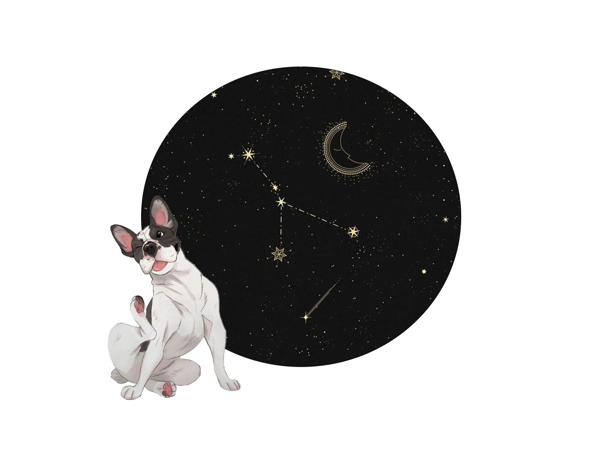
კიბო (ივნისი 21-ივლისი 22)
კირჩხიბი წყლის ნიშანია, მოტივირებულია ემოციით და არა ლოგიკით, რაც მათ მგრძნობიარეს და ინტუიციურს ხდის. დაბადებულები არიან მაშინ, როდესაც მზე ყველაზე მაღალია,
მათ აქვთ მშვიდი, მაგრამ შინაგანი ძალა და მოძრაობენ საკუთარი სიჩქარით. კირჩხიბებს უყვართ თავიანთი ძილი და საჭმელები. ვინაიდან ისინი არ არიან ვარჯიშის მოყვარულნი,
ურჩევნიათ რამდენიმე მოკლე გასეირნება , ვიდრე გრძელი ლაშქრობა. მათთვის ხმამაღალი ხმები აღმაშფოთებელია; ისინი საუკეთესოდ ხარობენ უსაფრთხო, მყუდრო გარემოში საყვარელ ადამიანებთან ერთად.
რაც მთავარია, ისინი ღრმად არიან ერთგულნი და იცავენ თავიანთ ადამიანურ მშობლებს.
ყველაზე თავსებადი ზოდიაქოს ნიშნები
კურო, ქალწული და თევზები
ყველაზე ნაკლებად თავსებადი ზოდიაქოს ნიშნები
ვერძი, მშვილდოსანი და ტყუპები
ძლიერი მხარეები
ტკბილი განწყობა. მოსიყვარულე.
სისუსტეები
შეუძლია წონაში ხშირი ხლება . ეშინია ჭექა-ქუხილის. კარგად არ მოგზაურობს.
ელემენტი
მმართველი
წყალი
მთვარე
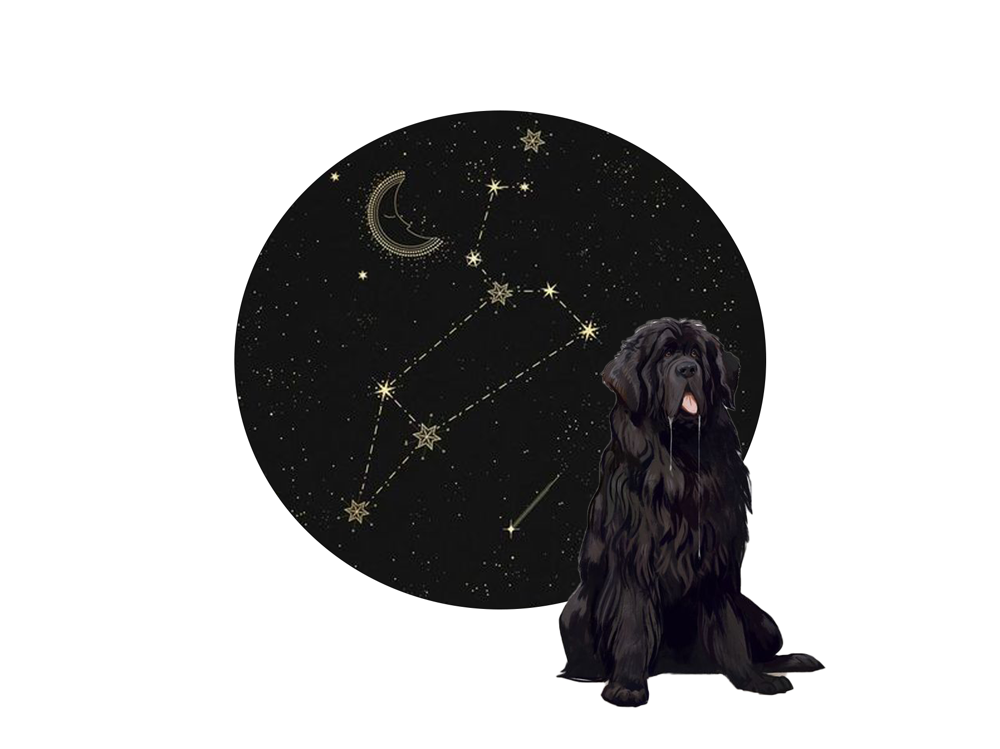
ლომი (ივლისი 23- აგვისტო 22)
ლომი არის მეფის, დედოფლის ან ლომის ნიშანი. ისინი ამაყი არსებები არიან, რომლებიც დაიბადნენ მმართველობისთვის, ბრწყინავებისთვის და უყვართ
ყურადღების ცენტრში ყოფნა. ბუნებრივად ქარიზმატულები არიან, ისინი ასხივებენ სითბოს, სიცოცხლისუნარიანობას და ძალას. მათ არ მოსწონთ კონკურენცია; მათ ურჩევნიათ
მარტოხელა ძაღლი იყვნენ ოჯახში, რომელსაც თაყვანს სცემენ და დააკმაყოფილებენ მათ ყველა საჭიროებას. მათ ასევე
უყვართ მოვლილად და განებივრებულად ყოფნა . მოუთმენლად ელიან მოგზაურობას ძაღლების სპა-ში. ლაშქრობაში თუ ქალაქის ცენტრში სეირნობისას, ისინი ვარსკვლავს
დაგამსგავსებენ.
ყველაზე თავსებადი ზოდიაქოს ნიშნები
სასწორი, ტყუპები და მშვილდოსანი
ყველაზე ნაკლებად თავსებადი ზოდიაქოს ნიშნები
კურო, მორიელი და მერწყული
ძლიერი მხარეები
დემონსტრაციულობა. გასართობი. კარგი ჯანმრთელობა.
სისუსტეები
დიდ ყურადღებას მოითხოვს. არ უყვარს ყურადღების გაზიარება.
ელემენტი
მმართველი
ცეცხლი
მზე
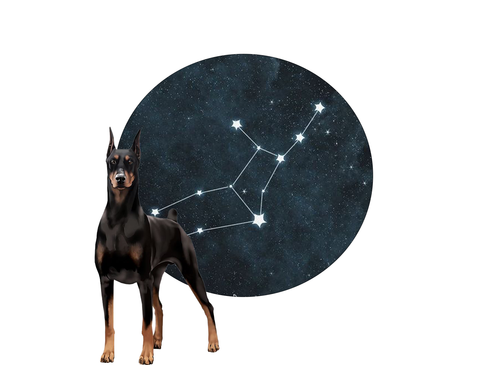
ქალწული (აგვისტო 23-სექტემბერი 22)
ამბობენ, რომ ისინი კრიტიკულები, აკვიატებულები და ზედმეტად ანალიტიკურები არიან. სიმართლე ის არის, რომ მათზე ძალიან ზრუნავენ და სურთ, რომ
ყველაფერი იყოს სრულყოფილი. ისინი უაღრესად თავდადებულები და შრომისმოყვარეები არიან, მაღალი იდეალებით, დიდი მთლიანობითა და სამსახურის სიყვარულით. ტყუპების მსგავსად,
მათ მართავს გონების პლანეტა მერკური, ამიტომ ქალწულმა ლეკვებმა იციან კომუნიკაცია , როგორც მოქმედებებით თუ სერიოზული გამოხედვით. ისინი საუკეთესოდ ამყარებენ
წესრიგს და რუტინას: იგივე საკვები, დღის ერთსა და იმავე დროს. მათ ასევე უყვართ სისუფთავე და მოვლილად ყოფნა. ისინი არიან შესანიშნავი ძიძები როგორც ბავშვებისთვის,
ასევე ლეკვებისთვის
ყველაზე თავსებადი ზოდიაქოს ნიშნები
კურო, თხის რქა და მორიელი
ყველაზე ნაკლებად თავსებადი ზოდიაქოს ნიშნები
ტყუპები, მშვილდოსანი და თევზები
ძლიერი მხარეები
სუფთა. კარგად იღებს მიმართულებას. სწრაფი შემსწავლელები.
სისუსტეები
პრეტენზიული მჭამელი. ბოსი. არ უყვარს სათამაშოების გაზიარება.
ელემენტი
მმართველი
მიწა
მერკური
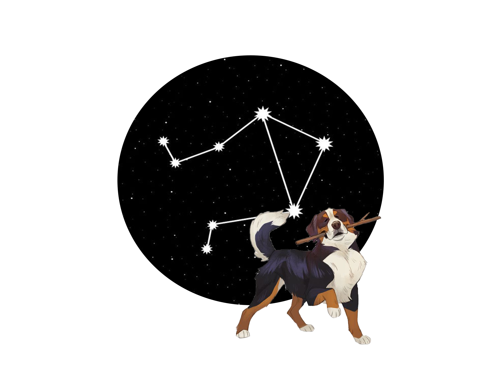
სასწორი (სექტემბერი 23-ოქტომბერი 22)
მათ რომანტიული ვენერა მართავს, სასწორი სიყვარულისა და ქორწინების ნიშანია. მათი მიზანია შექმნან ჰარმონია, სილამაზე და სიმშვიდე, ამიტომ გასაკვირი არ არის, რომ ეს ნიშანი ასოცირდება
ხელოვანთან, საყვარელთან და დიპლომატთან. ისინი გამოირჩევიან თავიანთი ხიბლით და აქვთ ნიჭი, იგრძნონ ის, რაც სხვებს სჭირდებათ. ვენერას მართულ ძაღლებს აქვთ მიმზიდველი ხასიათი
და ღრმად არიან მიბმული სხვა შინაურ ცხოველებთან და ადამიანებთან. უპირატესობას ანიჭებენ კომპანიონობას, ვიდრე მარტო ყოფნას
და ხშირად მოსწონთ ადამიანების მიყოლა. ისინი არაკომფორტულად გრძნობენ თავს სტრესულ ან ქაოტურ გარემოში და აფასებენ სიმშვიდესა და სიმშვიდეს, ვიდრე მოქმედებასა და თავგადასავალს.
ყველაზე თავსებადი ზოდიაქოს ნიშნები
ლომი, ტყუპები და მერწყული
ყველაზე ნაკლებად თავსებადი ზოდიაქოს ნიშნები
ვერძი, თხის რქა და მორიელი
ძლიერი მხარეები
მათ აქვთ დამამშვიდებელი უნარი. სოციალურია. გამორჩეულად კარგი გარეგნობა
სისუსტეები
ადვილად შინდება. არ უყვარს მარტო ყოფნა.
ელემენტი
მმართველი
ჰაერი
ვენერა
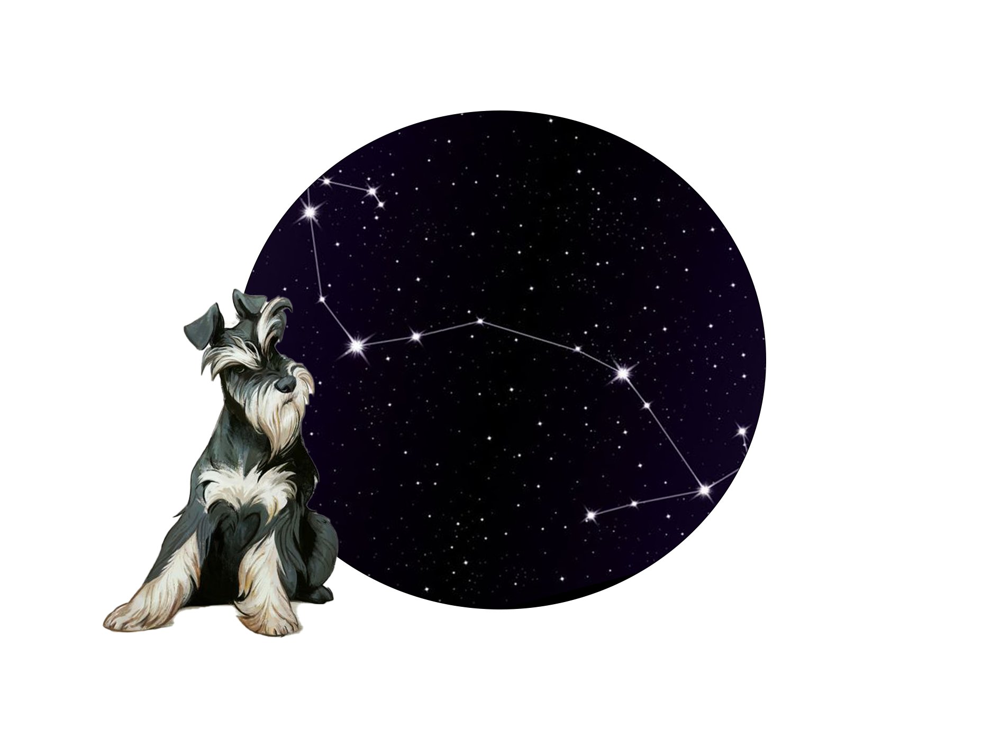
მორიელი (ოქტომბერი 23-ნოემბერი 21)
მორიელი ძალიან გაუგებარი ნიშანია. ისინი ცნობილები არიან სექსუალური და იდუმალი ყოფილებით - რაც ხშირად ასეა, მაგრამ ეს ნამდვილად არ ეხება ამ ნიშნის ინტენსივობას. მორიელებმა იციან,
რომ ცხოვრება სუსტია და ამის შედეგად უფრო ვნებიანად ცხოვრობენ. ისინი არიან ზოდიაქოს შამანები და ფსიქოლოგები, რომლებიც იკვლევენ ღრმა საგნებს. სერიოზული თვალით კონტაქტს ამყარებენ და, როგორც ჩანს, შეუძლიათ თქვენი აზრების წაკითხვა.
უყვართ ერთი ადამიანის ერთგულება. მათ გარკვეული დრო სჭირდება ნდობის ჩამოსაყალიბებლად, მაგრამ როცა ამას აკეთებენ, გყავთ მეგობარი და მოკავშირე მთელი ცხოვრების განმავლობაში.
ყველაზე თავსებადი ზოდიაქოს ნიშნები
კირჩხიბი, თხის რქა და თევზები
ყველაზე ნაკლებად თავსებადი ზოდიაქოს ნიშნები
კურო, ტყუპები და მერწყული
ძლიერი მხარეები
დამოუკიდებელი. თავდადებული. მაგნიტური .
სისუსტეები
შეიძლება იყოს ანტისოციალური. ადვილად არ პატიობს. იმალება ისეთ ადგილებში, სადაც მათ ვერ პოულობთ.
ელემენტი
მმართველი
წყალი
პლუტონი
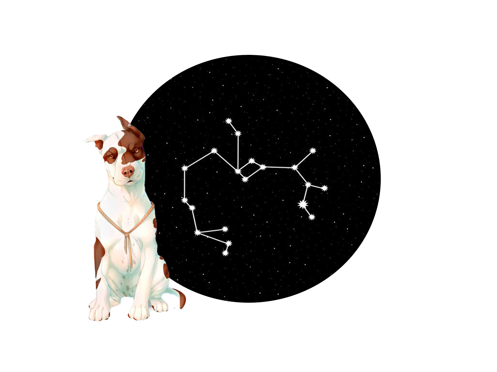
მშვილდოსანი (ნოემბერი 22- დეკემბერი 21)
მშვილდოსანი მოგზაურის, ფილოსოფოსისა და სტუდენტის სიმბოლოა. მათ შეიძლება არ იცოდნენ ცხოვრების აზრი, მაგრამ იციან, რომ ცხოვრებას აქვს აზრი და ეძებენ მის მიზანს.
მათთვის ცხოვრება გაბედული თავგადასავალია. ისინი ცნობილილები არიან დიდი ოცნებებით, დიდი პიროვნებითა და მოგზაურობის სიყვარულით. მშვილდოსან ძაღლებს სჭირდებათ ადგილი
სეირნობისთვის და გრძნობენ შფოთვას, როდესაც იძულებულნი არიან დარჩნენ სახლში. ისინი მაქსიმალურად ბედნიერები
არიან გარეთ ყოფნაში. მათ აქვთ ფერადი და კომიკური პიროვნებები და მეგობრულები არიან (როგორც ხალხთან, ასევე შინაურ ცხოველებთან) და შესანიშნავი მოგზაურობის კომპანიონები არიან.
ყველაზე თავსებადი ზოდიაქოს ნიშნები
ვერძი, ლომი და მერწყული
ყველაზე ნაკლებად თავსებადი ზოდიაქოს ნიშნები
ქალწული, თხის რქა და თევზები
ძლიერი მხარეები
ჯანსაღი. შესანიშნავია საგზაო მოგზაურობებში. ცოცხალი პიროვნება.
სისუსტეები
უყვარს მარტო ხეტიალი. ადვილად ბეზრდება ერთფეროვნება. იმპულსური.
ელემენტი
მმართველი
ცეცხლი
იუპიტერი
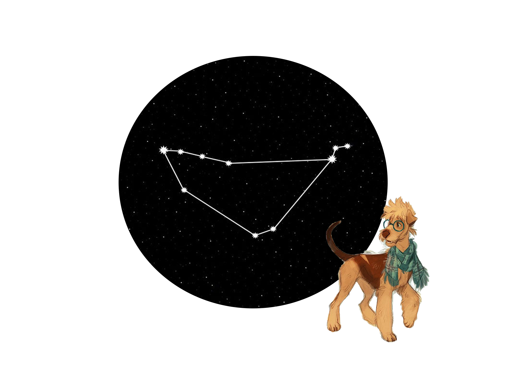
თხის რქა (დეკემბერი 22-იანვარი 19)
თხის რქები ასოცირდება პასუხისმგებლობასთან, ავტორიტეტთან და ძალასთან. სერიოზული სატურნი მართავს, ეს ნიშანი ცნობილია თავისი მისწრაფებით, მონდომებითა და ძლიერი
სამუშაო ეთიკით. მათი სიმბოლოა მთის თხა; მათ აქვთ ამბიციური მიზნები და არ ეშინიათ შრომისმოყვარეობის მწვერვალზე ასასვლელად. ქუდის თოხები არ არიან ზარმაცი. სინამდვილეში,
ისინი ცოცხლდებიან, როდესაც მათ აქვთ შესაძლებლობა ისწავლონ ახალი დავალება ან უნარი. ისინი ასრულებენ
ბრძანებებს და უყვართ თავიანთი მოვალეობების შესრულება. ისინი შესანიშნავი მცველი ძაღლები და ძიძები არიან.
ყველაზე თავსებადი ზოდიაქოს ნიშნები
კურო, ქალწული და მორიელი
ყველაზე ნაკლებად თავსებადი ზოდიაქოს ნიშნები
ვერძი, ტყუპები და მშვილდოსანი
ძლიერი მხარეები
სტაბილური პიროვნება. პროგნოზირებადი. დამცავი.
სისუსტეები
მოწყენილია როცა არ არის დაკავებული. შეიძლება იყოს დაძაბული. ნელა მოძრაობს.
ელემენტი
მმართველი
მიწა
სატურნი
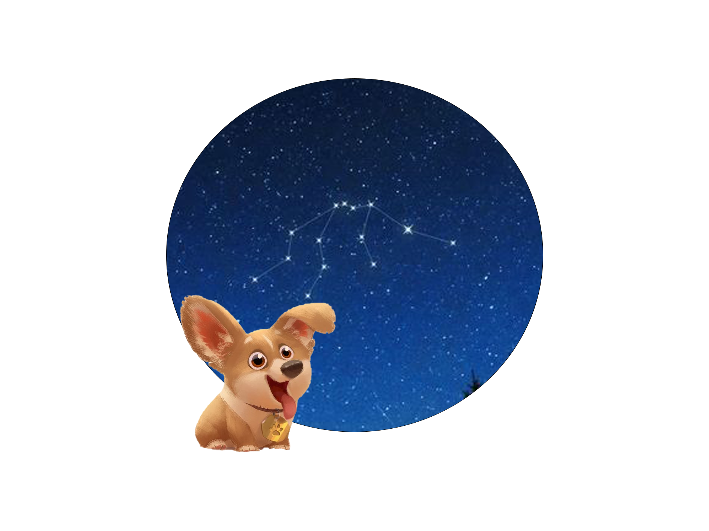
მერწყული(იანვარი 20-თებერვალი 18)
მერწყული მეამბოხე და არაკონფორმისტის ნიშანია. ეს პიროვნებები ჭკვიანები არიან, ჯიუტი, რაციონალური და ექსცენტრიული. შინაური ცხოველები
ერთნაირად მიდიან თავიანთ რიტმზე და ადგენენ საკუთარ წესებს. ექსცენტრიული ურანი მართავს, ისინი ზოგჯერ შეიძლება არაპროგნოზირებადი იყვნენ. მათ უყვართ ცვლილებები და სძულთ
მოწყენილობა. მერწყული ძაღლები ყოველთვის მზად არიან ახალი სათამაშოსთვის, ხრიკისთვის ან დასასვენებლად. ისინი შეიძლება არ იყვნენ თბილები და მოსიყვარულეები, მაგრამ ისინი
უკიდურესად სოციალურები და მეგობრულები არიან ადამიანებთან და სხვა შინაურ ცხოველებთან. სინამდვილეში, არავინ აჩენს უკეთეს ან უფრო ერთგულ მეგობარს, ვიდრე ეს ცბიერი ძაღლები.
ყველაზე თავსებადი ზოდიაქოს ნიშნები
ტყუპები, სასწორი და მშვილდოსანი
ყველაზე ნაკლებად თავსებადი ზოდიაქოს ნიშნები
კურო, კირჩხიბი და მორიელი
ძლიერი მხარეები
უაღრესად ინტელექტუალური. უყვარს ახალი ნივთები და ადამიანები.
სისუსტეები
ბევრი ნერვული ენერგია. ყოველთვის არ ემორჩილება ბრძანებებს. სტიმულირება სჭირდება.
ელემენტი
მმართველი
ჰაერი
ურანი
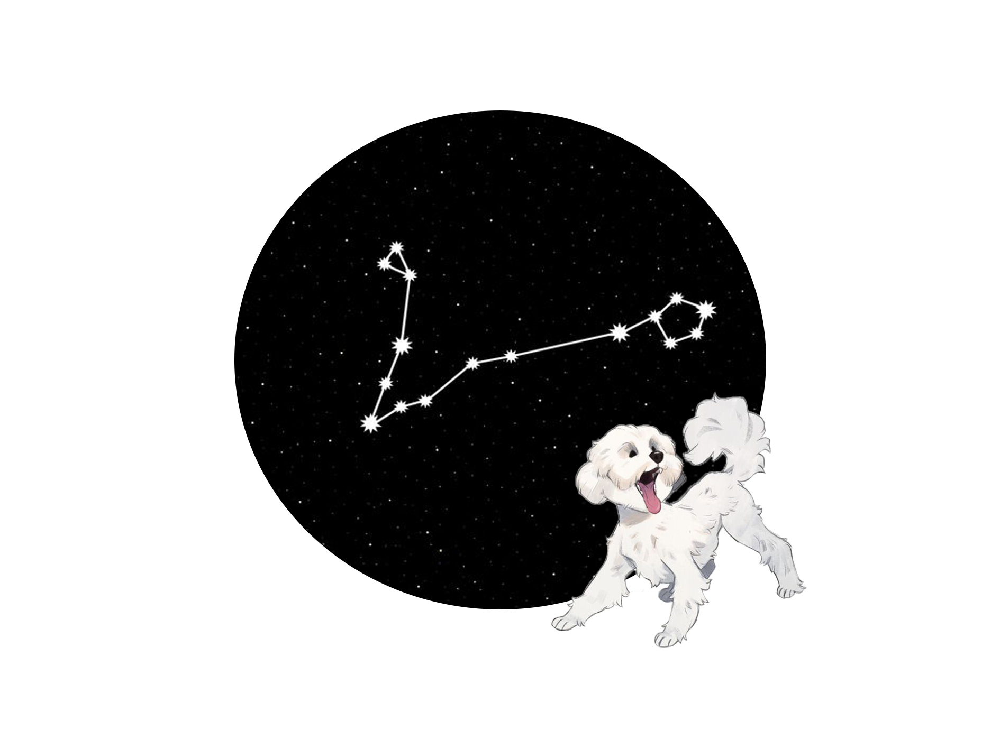
თევზები (თებერვალი 19-მარტი 20)
ნეპტუნის მმართველობით, თევზები მართავენ შთაგონებისა და წარმოსახვის უხილავ და უხილავ სამყაროს. ესენი არიან ზოდიაქოს მეოცნებეები, მისტიკოსები და მუსიკოსები.
ღრმად არის და უაღრესად ინტუიური, მათ სჭირდებათ სივრცე და სიმშვიდე. მათ უყვართ ადამიანებთან ერთად
სიახლოვე, ხანდახან მიჰყვებიან
მათ გარშემო და იძინებენ საფარქვეშ. ისინი ასევე გრძნობენ თქვენს განწყობას, რის გამოც ისინი ქმნიან თერაპიულ ძაღლებს. მზიან ადგილას დაძინება მუსიკით მათი ბედნიერი ადგილია.
ყველაზე თავსებადი ზოდიაქოს ნიშნები
კურო, კირჩხიბი და თხის რქა
ყველაზე ნაკლებად თავსებადი ზოდიაქოს ნიშნები
ვერძი, ტყუპები და მშვილდოსანი
ძლიერი მხარეები
სასიყვარულო განწყობა. მშვიდი. კარგია სხვა შინაურ ცხოველებთან ერთად.
სისუსტეები
უაღრესად მგრძნობიარე. შეიძლება იყოს ლეთარგიული..
ელემენტი
მმართველი
წყალი
ნეპტუნი